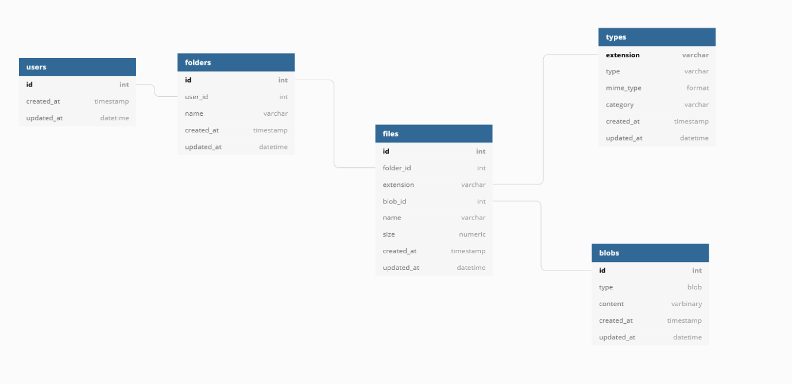
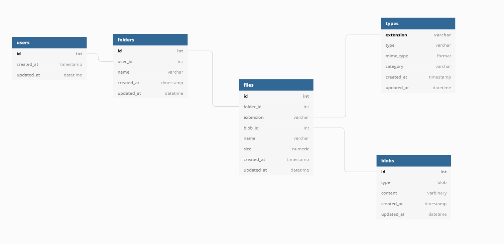

Mon intégration au sein de l'entreprise c'est très bien passer. Effectivement, malgrès le context sanitaire
je n'ai pas eu la possibilité d'être en présentielle. Toutes mes journées se sont déroulées en distancielle, donc
c'était beaucoup de travaux en autonomie.
Tous les matins nous avions une réunion avec mon maitre de stage ainsi que
les autres stagiaires afin de savoir où nous en étions et expliqué ce que l'on avait effectué la journée d'avant.
Durant mon stage au sein de l'entreprise COFLINE j'ai pu acquérir des compétences accrues
dans le domaine du développement WEB Front END, l'utilisation du framwork PHP ainsi que dans la cybésécurité.
En effet, outre le faite que j'ai travailler essentiellement sur du développement WEB, j'ai travaillé sur la
création d'une API permettant de me connecter de manière sécurisée.
J'ai aussi travailler sur la mise en place d'une base de données,
utile à l'entreprise. Elle ressençait tous les clients de l'entreprise. Elle permettait aussi de mettre en
relation les clients et les fichiers / dossiers qu'ils leurs étaient propre.
Des problématiques mise en place pour se remettre en question, dans le droit chemin, telle que :
Pourquoi utilisé MariaDB et pas MongoDB ? Quelles sont les différences entre les deux ? etc..
Ci contre, voici l'ébauche de ma base la base de donnée mise en place :

STAGE,
Je tiens à remercier M. Ugo BRONSZEWSKI de m’avoir accueilli pendant ce stage au sein de
votre équipe.
Ce stage m’a permis de m’améliorer sur beaucoup de points, tant sur des aspects
théoriques que pratiques. Cela m'a permit d'acquérir des compétences accrues dans le domaine du
développement WEB, la mise en place d'un BDD sécurisé et sur la création d'une API sécurisée.
Pour conclure sur une note d’autant plus positive, j’ai été très heureux de me voir
responsable d’un projet, de sa gestion, et d’être libre quant à mes prises
d’initiatives.
D’un point de vue organisationnel, j’ai pu réfléchir moi-même sur
les différentes étapes de développement du projet,
tant sur l’aspect « physique » de ce dernier que sur sa mise en place temporelle.

Mon Intégration au sein de l'entreprise
Mon intégration au sein de l'entreprise c'est très bien passer. Effectivement, malgrès le context sanitaire je n'ai pas eu la possibilité d'être en présentielle. Toutes mes journées se sont déroulées en distancielle, donc c'était beaucoup de travaux en autonomie.
Tous les matins nous avions une réunion avec mon maitre de stage ainsi que les autres stagiaires afin de savoir où nous en étions et expliqué ce que l'on avait effectué la journée d'avant.
Compétences acquises
Durant mon stage au sein de l'entreprise COFLINE j'ai pu acquérir des compétences accrues dans le domaine du développement WEB Front END, l'utilisation du framwork PHP ainsi que dans la cybésécurité.
En effet, outre le faite que j'ai travailler essentiellement sur du développement WEB, j'ai travaillé sur la création d'une API permettant de me connecter de manière sécurisée.
J'ai aussi travailler sur la mise en place d'une base de données, utile à l'entreprise. Elle ressençait tous les clients de l'entreprise. Elle permettait aussi de mettre en relation les clients et les fichiers / dossiers qu'ils leurs étaient propre.
Des problématiques mise en place pour se remettre en question, dans le droit chemin, telle que :
Pourquoi utilisé MariaDB et pas MongoDB ? Quelles sont les différences entre les deux ? etc..
Ci contre, voici l'ébauche de ma base la base de donnée mise en place :
STAGE,
Je tiens à remercier M. Ugo BRONSZEWSKI de m’avoir accueilli pendant ce stage au sein de votre équipe.
Ce stage m’a permis de m’améliorer sur beaucoup de points, tant sur des aspects théoriques que pratiques. Cela m'a permit d'acquérir des compétences accrues dans le domaine du développement WEB, la mise en place d'un BDD sécurisé et sur la création d'une API sécurisée. Pour conclure sur une note d’autant plus positive, j’ai été très heureux de me voir responsable d’un projet, de sa gestion, et d’être libre quant à mes prises d’initiatives.
D’un point de vue organisationnel, j’ai pu réfléchir moi-même sur les différentes étapes de développement du projet, tant sur l’aspect « physique » de ce dernier que sur sa mise en place temporelle.